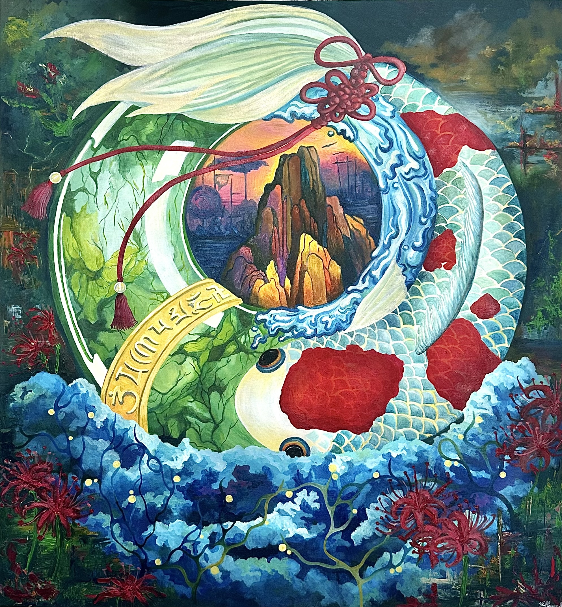

2025
Attachment · 執念
Oil on canvas
The attachments of lives to come, of lives passed, of what was and what is — when released, the true self becomes visible. The wounded, the aching, the angry — when we loosen our grip, freedom arrives.
Simply said, yet not easily done. Even after breathing the scent of the bianhua and drinking Meng Po's soup of forgetting, the imprints remain deeply etched, traveling with us into this life. Though the jade may shatter, even that is transformation and rebirth. Let the six-eared pan chang knot remind us — toward the union of mind and matter.